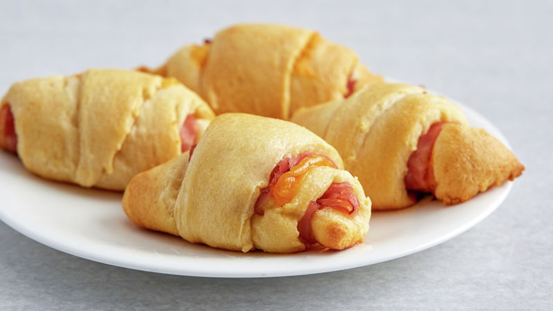

Want a quick, easy, and delicious snack? Look no further than these cheesy garlic crescent rolls! These rolls are delectably cheesy on the inside and have a great garlic taste to them. For best results, I recommend you bake them for a shorter amount of time (about 10 minutes). This keeps the cheese viscous and less likely to drip out of the dough while ensuring that the roll is soft and melts in your mouth. While this recipe uses simple ingredients for convenience, feel free to take it to the next level by using fresh dough and garlic cloves for the garlic butter.
NOTE: The image used for this recipe is not my own. All of the crescent rolls were gone before I could take a picture! I will change the photo when I make the rolls again.
|  |
Prep: 10 mins Cook: 10 mins Total: 20 mins Servings: 4 Yield: 8 crescent rolls |
Ingredients
- 1 can of Pillsbury™ Original Crescent Rolls
- 100g of block cheddar cheese
- 3/4 tbsp of unsalted butter
- 1 tbsp of garlic powder
Instructions
- Open the can of Pillsbury™ Original Crescent Rolls and separate the dough into 8 triangular sheets.
- Cut the block of cheddar cheese into 8 moderately narrow and thin slices. This ensures that the cheese will be completely covered by the dough when rolling.
- Combine the unsalted butter and garlic powder in a small bowl. Microwave the mixture on high for 20 seconds, then mix the garlic powder into the melted butter.
- Evenly spread equal amounts of the garlic butter mixture on each sheet of dough.
- Place each cheese slice onto a sheet of dough so that the length of the cheese is parallel to the length of the dough.
- Beginning from the wider end, roll up each sheet of dough lengthwise. Tuck in the sides of the roll so that the cheese is completely covered. This will prevent your baking sheet from becoming a gooey mess when the cheese melts.
- Place each unbaked crescent roll onto a non-stick baking sheet, then bake at 375°F (190°C) for 10-15 minutes. Shorter baking times will result in a softer roll and a more viscous cheese, while longer baking times will result in a crunchier roll and a runnier cheese.